Scripts для SMP C#
Набор C# скриптов, выполняющихся на базе ScriptManagerPlugin (SMP). Автоматизируют рутинные операции в Renga.
Функционал плагинов может быть реализован через серверную часть.
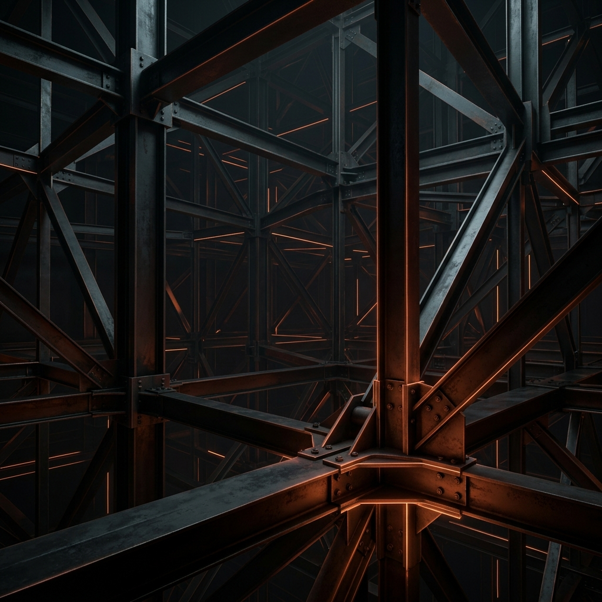
Основная панель
Скрипт 1.1. Присвоить Element ID
Извлекает системные Renga ID объектов и записывает их в виде текста в пользовательское свойство для последующего экспорта.
❗ Не путайте Renga ID с Уникальным идентификатором
Скрипт 1.2. Присвоить IfcGUID
Извлекает или генерирует IfcGUID каждого элемента Renga и записывает его в отдельное свойство.
Скрипт 1.3. Автонумерация
Гибкая автоматическая нумерация элементов модели по различным категориям с возможностью добавления префиксов и суффиксов.
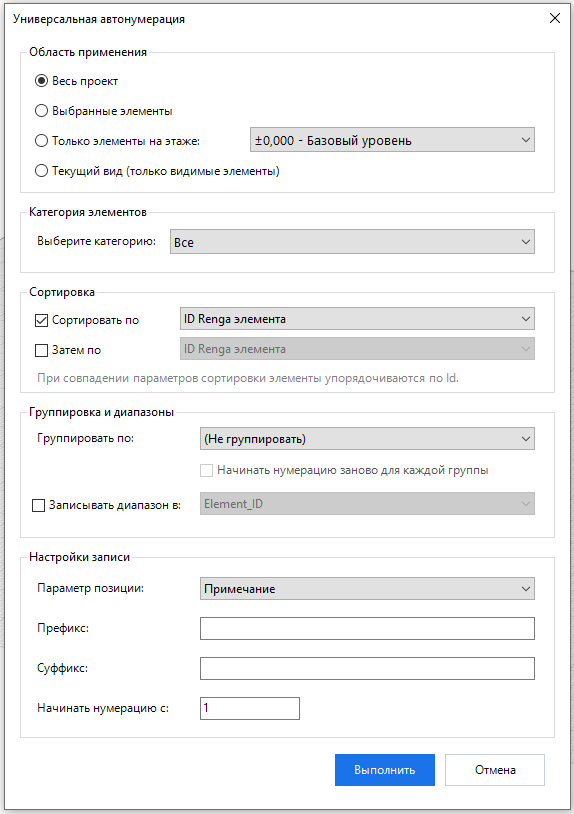
Скрипт 1.4. Именование осей
Гибкое автоматическое переименование и сортировка координационных осей в соответствии с требованиями ГОСТ.
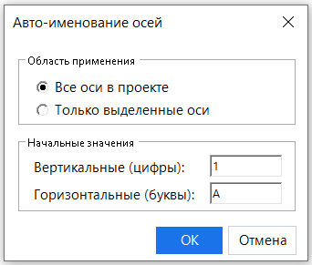
Из алфавита строго исключаются недопустимые ГОСТом буквы (Ё, З, Й, О, Ч, Ъ, Ы, Ь).
Скрипт 1.5. Площадь квартир
Автоматический расчет фактической площади квартир с учетом понижающих коэффициентов помещений (лоджии, балконы, террасы).
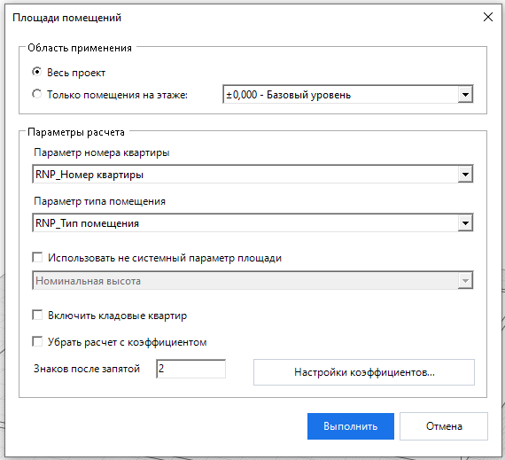
• Для каждого помещения должны быть предусмотрены следующие свойства:
• RNP_Коэффициент площади [Тип: Действенное число]
• RNP_Площадь с коэффициентом [Тип: Действенное число]
• RNP_Площадь квартиры общая [Тип: Действенное число] (общая площадь с учетом понижающих коэффициентов летних помещений)
• RNP_Площадь квартиры жилая [Тип: Действенное число] (сумма только «Жилых комнат», спален и т.д.)
• RNP_Площадь квартиры с лоджией и балконом без коэфф. [Тип: Действенное число] (полная геометрическая сумма без коэффициентов)
• RNP_Площадь квартиры [Тип: Действенное число] (основная площадь без учета летних помещений)
• RNP_Число комнат [Тип: Целое]
• RNP_Индекс помещения [Тип: Строка] (заполняется автоматически в формате отметка уровня_номер квартиры_номер комнаты)
• RNP_Тип помещения [Тип: Целое]
• RNP_ Номер квартиры [Тип: Целое]
❗ Если данные свойства отсутствуют скрипт выдаст предупреждение.
Скрипт 1.6. Принадлежность к помещению
Анализ геометрии (BBox) для вычисления, в каком помещении физически находится элемент (дверь, окно, мебель и т.д.).
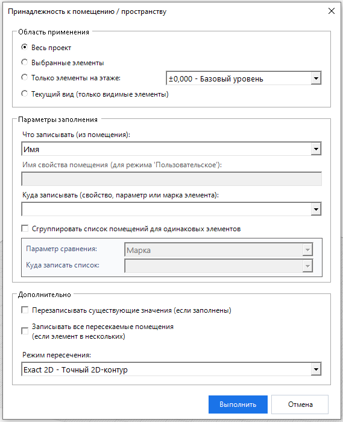
• Exact 2D (Точный 2D-контур) — самый точный и рекомендуемый по умолчанию метод. Скрипт строит точный многоугольник помещения по его реальным вершинам (с учетом всех ниш и изгибов стен) и проверяет пересечение алгоритмом Ray-casting (испускания лучей). Учитывается также координата Z (помещение должно перекрывать объект по высоте).
• Full (Полностью внутри) — жесткое правило: габаритный 3D-контейнер элемента должен на 100% находиться внутри габаритов помещения.
• Center (Центр внутри) — достаточно, чтобы центральная точка объекта попадала в помещение. Отлично подходит для окон и дверей, которые установлены на границе в наружных стенах.
• Intersect (Частичное касание) — фиксирует принадлежность при любом физическом пересечении габаритов, даже если элемент сильно выступает за пределы комнаты.
Скрипт 1.7. Экспорт в PDF
Пакетный экспорт листов чертежей в формат PDF.
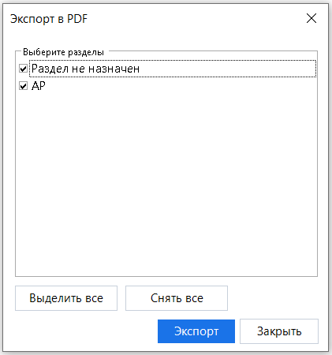
Проект обязательно должен быть сохранен.
Скрипт 1.8. Ведомости чертежей
Автоматизирует сбор информации о чертежах проекта и формирует текстовую ведомость.
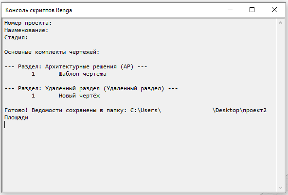
В файл записывается шифр проекта, наименование, стадия и полный перечень основных комплектов чертежей.
Скрипт 1.9. Замена шрифта текста
Массовая замена настроек шрифта (семейство, размер, стиль) у элемента Текст на выбранных чертежах (листах).
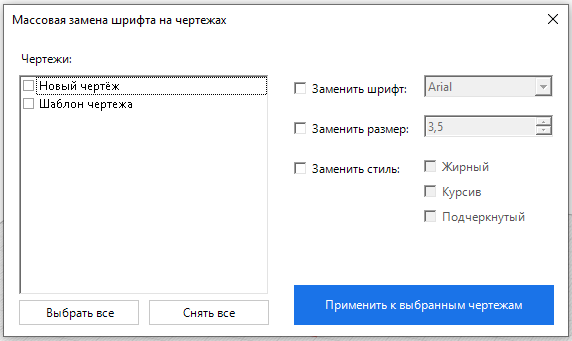
Скрипт 1.10. Свойства окон и дверей
Скрипт для детализированного анализа заполнений проемов. Извлекает параметры геометрии, форму (например, «Прямоугольный проём», «Арочный проём») и выводит эту информацию.
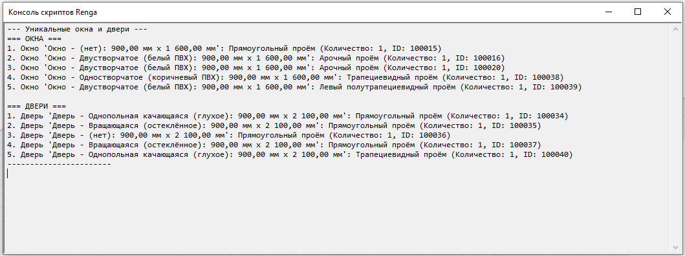
Скрипт не перезаписывает свойства модели самостоятельно, а служит мощным инструментом диагностики параметров окон и дверей.
Скрипт 1.11. Вывод стилей элементов
Выгружает в текстовый файл полный список всех стилей, профилей и материалов, используемых в проекте (стили окон, труб, систем, арматуры и т.д.).
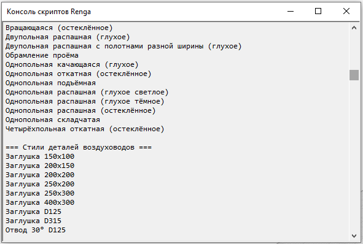
Скрипт 1.12. Подсчет объектов
Информационный скрипт, считающий точное количество элементов выбранной категории в модели или выборке.
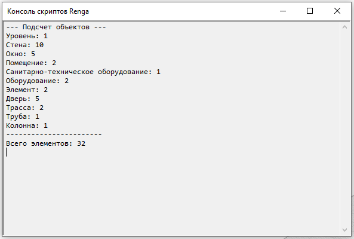
Скрипт 1.13. Показать ID файла
Вывод уникальных идентификаторов текущего файла проекта и сессии.
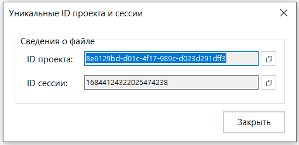
ID сессии – это уникальным идентификатором рабочей сессии, используется для работы с Renga Collaboration Server и задает имя для в файлах Журнала действия проекта.
Скрипт 1.14. Выделение по IfcGUID
Быстрый поиск и подсветка элементов модели по их глобальному уникальному идентификатору (IfcGUID).
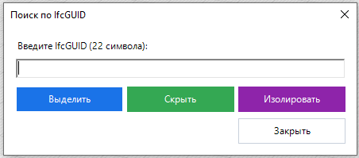
• Выделить элемент на 3D Виде.
• Скрыть элемент на 3D Виде.
• Изолировать элемент на 3D Виде.
❗ Не путайте IfcGUID, который имеется в IFC файлах модели с Renga ID и Уникальным идентификатором.
Скрипт 1.15. Выделение по RengaID
Поиск и выделение элементов по внутреннему системному идентификатору Renga (целое число).
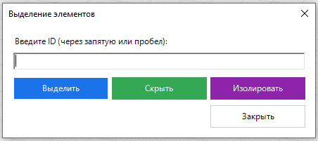
• Выделить элемент на 3D Виде.
• Скрыть элемент на 3D Виде.
• Изолировать элемент на 3D Виде.
❗ Не путайте Renga ID с IfcGUID и Уникальным идентификатором.
Скрипт 1.16. Управление уровнями
Управление уровнями проекта (скрыть, показать, изолировать, выбрать, закрепить).
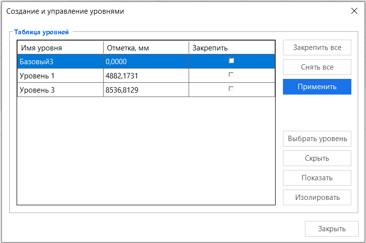
❗ Редактирование отметки уровня заблокировано.
Скрипт 1.17. Закреплённые 3D элементы
Скрипт для удобного поиска и массового открепления зафиксированных объектов в 3D Виде.
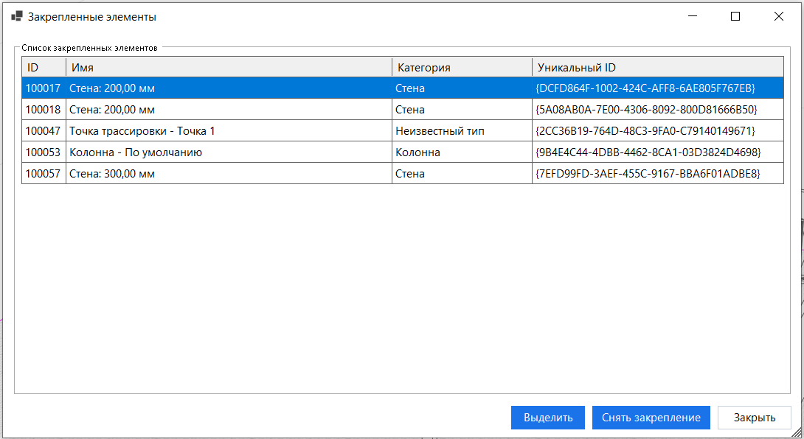
Скрипт 1.18. Диспетчер пользовательских свойств
Комплексное управление пользовательскими свойствами проекта. Позволяет создавать новые свойства, массово назначать свойства различным категориям объектов, управлять галочкой экспорта в CSV, задавать формулы (выражения), а также сохранять и загружать все настройки через внешний файл CSV.
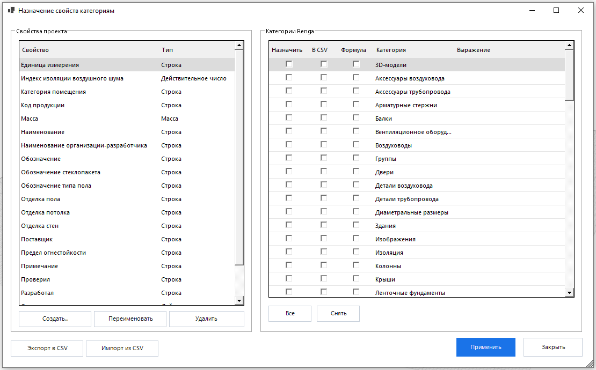
• «Создать...» — добавить новое свойство нужного типа.
• «Переименовать» — изменить название уже существующего свойства.
• «Удалить» — полностью удалить свойство из проекта (ВНИМАНИЕ: это стирает все данные этого свойства у всех объектов).
В правом столбце («Категории Renga») производится управление привязкой выбранного свойства к категориям.
❗ Информационная галочка «Формула» (только для чтения) показывает истинное состояние из программы Renga и управлять ей нельзя. При вводе любого текста в столбец «Выражение» данная галочка автоматически ставится, но если удалить введенный текст, галочка не пропадет, так как Renga API сохранит пустое значение и физически не снимет настройку.
Доступны функции «Экспорт в CSV» и «Импорт из CSV» для переноса всех свойств с учетом Выражений.
Скрипт 1.19. Удалить все свойства проекта
Глобальная очистка модели от абсолютно всех пользовательских свойств.
❗ Действие необратимо.
Скрипт 1.20. Групповое заполнение свойств
Массовое назначение одинаковых значений пользовательских свойств у объектов в проекте.
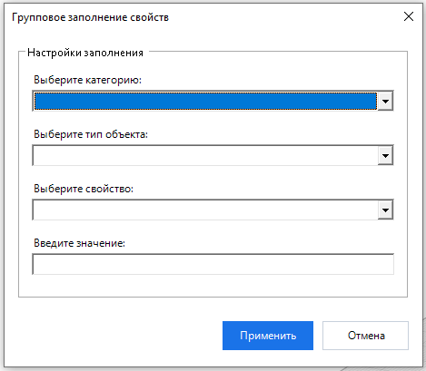
Скрипт 1.21. Проверка на дубликаты
Поиск и удаление случайно скопированных друг в друга объектов (стен, перекрытий, колонн, окон, проемов и линий), которые завышают объемы материалов в сметах.
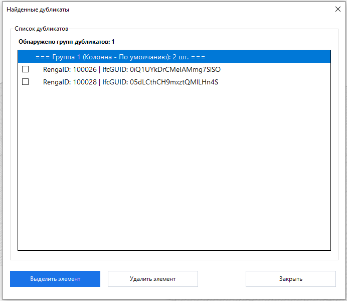
Скрипт 1.22. Log-журналы Renga
Быстрый просмотр, фильтрация и анализ журналов совместной работы проекта Renga (изменения объектов), логов работы приложения (AecApp.log) и логов сетевого сервера совместной работы (RengaServer.log) прямо внутри интерфейса Renga.
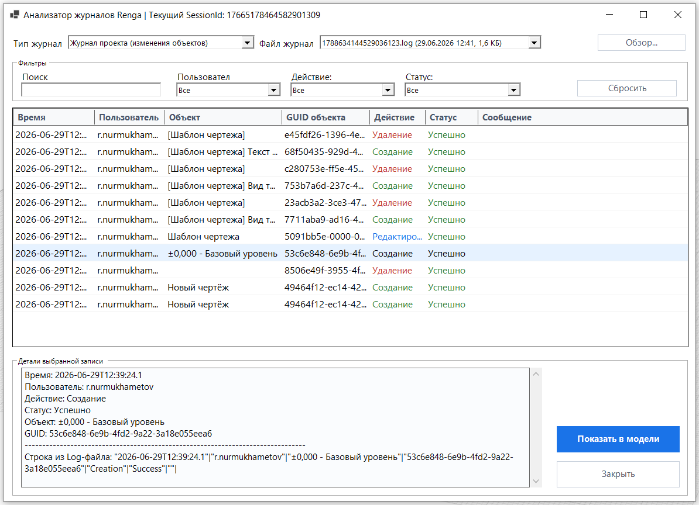
Скрипт автоматически определяет SessionId текущего открытого проекта и сразу подгружает соответствующий лог-файл.
Форма открывается в немодальном floating-режиме с поддержкой растягивания на весь экран и масштабирования DPI, не блокируя работу в самой программе Renga.
Доступна возможность выделять элементы согласно записям в журнале.
Скрипт 1.23. Удаление Log-файлов
Очистка временных лог-файлов сессий Renga (*.log) и файлов индивидуальных пользовательских настроек проектов (*.json) для освобождения дискового пространства от устаревших данных.
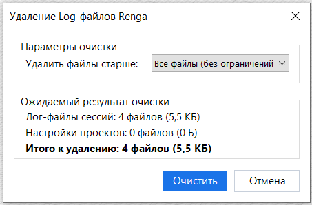
❗ Удаление выполняется безвозвратно (в обход Корзины), а файлы, занятые или заблокированные другими процессами в данный момент, автоматически и безопасно пропускаются.